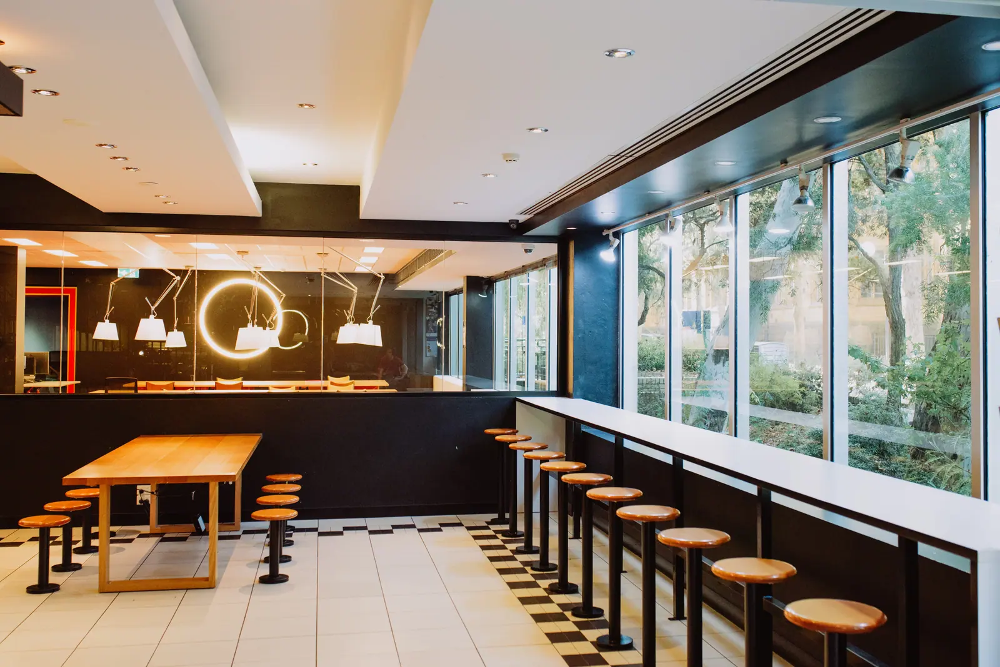
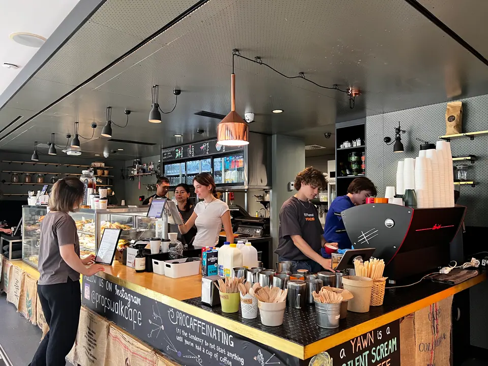
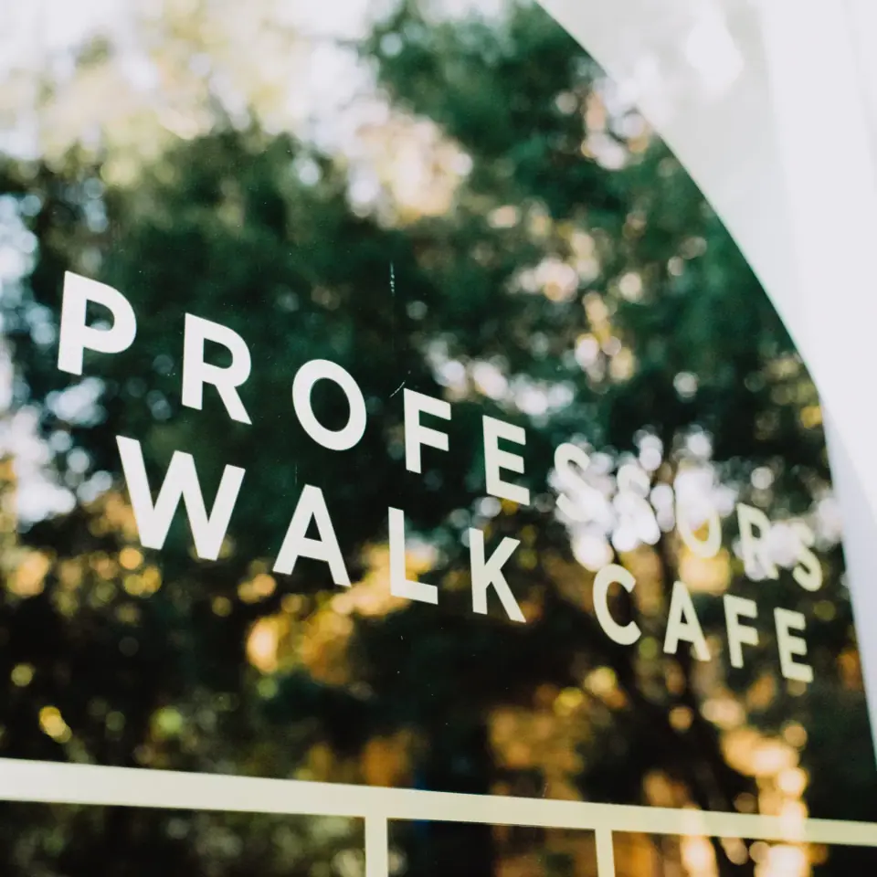

An environmentally friendly café, in the Baillieu Library.
We are a boutique Italian café, community oriented, environmentally focused takeaway and meeting place.
- Now
- HoursMon to Fri 9am–5pm
Sat & Sun closed - AddressBaillieu Library, Building 177, The University of Melbourne, Parkville VIC 3010
Baillieu Library
We are located in the Baillieu Library's informal learning space on the ground floor, with its large windows and leafy surroundings.
We select our packaging carefully to be environmentally friendly and recyclable, and our Healthy Food Choice options help customers make informed decisions.

Parkville
Ground floor, Baillieu Library
| Monday | 9am–5pm |
|---|---|
| Tuesday | 9am–5pm |
| Wednesday | 9am–5pm |
| Thursday | 9am–5pm |
| Friday | 9am–5pm |
| Saturday | Closed |
| Sunday | Closed |
- End of year hours: weekdays 9am to 4pm from 21 November, 10am to 4pm from 1 December, then closed from 12 December until the café reopens on Monday 4 January 2027.
- Coffee beans (250 g, $17.50) and coffee pods to take home.
